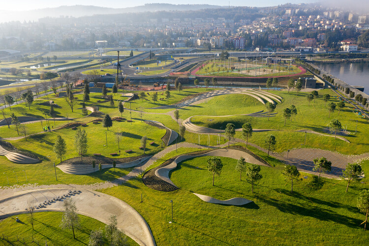
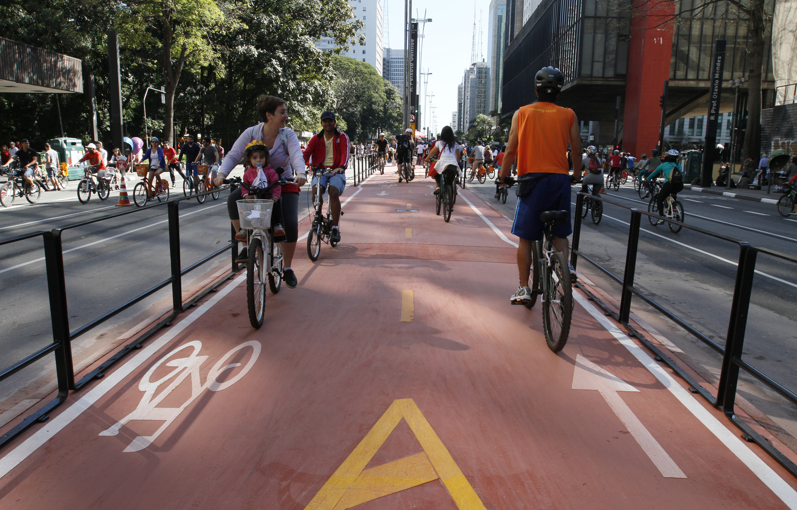

O que é Urbanidade?
Urbanidade representa o conjunto de comportamentos e valores que promovem o respeito mútuo e a convivência harmoniosa nos espaços urbanos. É a arte de viver em comunidade, onde o respeito ao espaço público e a consideração pelo próximo são fundamentais.
Em um mundo cada vez mais urbanizado, a urbanidade se torna essencial para garantir qualidade de vida nas cidades. Práticas sustentáveis e cooperativas ajudam a criar ambientes urbanos mais humanos, que valorizam tanto o desenvolvimento quanto a preservação da natureza.
Mobilidade e Espaço Público
A mobilidade urbana sustentável, como ciclovias e transportes públicos eficientes, é fundamental para a qualidade de vida nas cidades. Esses espaços promovem não apenas o deslocamento, mas também a convivência entre os cidadãos. Quando bem planejados, integram a cidade à natureza, criando corredores verdes que melhoram o ar e a paisagem urbana.
Sustentabilidade e Espaços Verdes
Os espaços verdes urbanos, como parques e jardins, são essenciais para o equilíbrio entre o urbano e o natural. Eles proporcionam melhor qualidade do ar, reduzem o calor das cidades e oferecem áreas de lazer e convívio. A sustentabilidade urbana busca integrar a natureza ao desenvolvimento das cidades, criando ambientes mais saudáveis e agradáveis para todos.